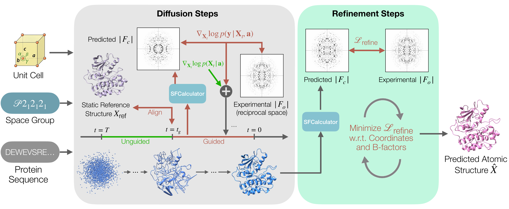

Generative models trained on public databases of protein structures, most of which have been determined by X-ray crystallography, now provide powerful priors for structure prediction. However, they are not readily conditioned on the measurements from a new crystallographic experiment, limiting their use for X-ray structure determination. In crystallography, the measured structure-factor amplitudes do not by themselves determine an electron density map or atomic structure because the associated phases are unobserved and must be inferred. Structure determination therefore remains an inverse problem in which candidate models must be both structurally plausible and consistent with measured diffraction data, often requiring substantial manual refinement by human experts. Emerging methods aim to incorporate experimental information more directly into predictive and refinement workflows. We present CrystalBoltz, a generative framework that casts crystallographic refinement as Bayesian inference over atomic structures and operates directly on structure-factor amplitudes. CrystalBoltz moves from unguided generation with a pre-trained prior over protein structures to experiment-guided posterior sampling, followed by atomic coordinate and B-factor refinement. Across multiple protein crystallography datasets, CrystalBoltz attains lower coordinate RMSD and lower R-factors than the strongest baselines considered, while reducing runtime by a factor of 33 relative to existing experimentally guided refinement.

CrystalBoltz proceeds in two phases. Phase 1 runs Boltz-2 reverse diffusion conditioned on the protein sequence together with the crystal's unit cell and space group. Sampling begins unguided to let the prior establish a coarse fold; once a backbone has emerged (at step tg), we switch on experimental guidance and continue through to t = 0. At each guided step, the denoised structure prediction X̂0 is aligned to the crystal frame, passed through the differentiable SFCalculator forward model to produce calculated structure-factor amplitudes |Fc|, and compared against the experimental |Fo| using a combined Gaussian + Rice crystallographic likelihood. The likelihood gradient is backpropagated through the denoiser to steer the sampling trajectory toward structures consistent with the diffraction data. Phase 2 takes the final denoised structure and jointly refines atomic coordinates and isotropic B-factors against the crystallographic R-factor for a small number of Adam steps. This separates global, prior-guided conformational search from local crystallographic fitting.
Qualitative comparison on PDB 4NTZ. Predicted structures from CrystalBoltz (ours), ROCKET, Boltz-2, and Phenix are overlaid on the deposited PDB structure. CrystalBoltz recovers the large conformational rearrangement supported by the experimental data (1.32 Å RMSD, 0.39 Rfree), whereas all baselines remain trapped near the initial Boltz-2 prediction with substantially higher RMSD and Rfree.
We evaluate CrystalBoltz on six experimental targets from the PDB (8DWN, 4NTZ, 7O51, 7SEZ, 7VNX, 1L63), spanning diffraction resolutions of 1.69–2.20 Å and protein sizes of 164–306 residues. Compared against Phenix refinement, the unguided Boltz-2 prior, and ROCKET (a recent data-guided method that optimizes MSA embeddings against diffraction data), CrystalBoltz attains the lowest RMSD and R-factors on the majority of metric-target pairs and consistently improves the R-factors over the unguided prior. The largest gains appear on targets where the prior is far from the deposited structure: on 4NTZ (4.54 Å initial RMSD gap) and 8DWN (2.65 Å gap), CrystalBoltz reaches 1.30 Å and 1.32 Å RMSD respectively, recovering conformational rearrangements that all baselines miss.
Beyond accuracy, CrystalBoltz reduces per-target runtime from hours to minutes on a single NVIDIA A6000: 11.3 minutes end-to-end versus 376 minutes for ROCKET, a 33.3× speedup. This gap arises because ROCKET requires iterative MSA-bias optimization followed by a full phenix.refine step, whereas CrystalBoltz applies guidance during reverse diffusion and a short Adam-based refinement against the crystallographic forward model. The rotating visualization above shows the final CrystalBoltz prediction overlaid on the deposited structure — where baselines remain trapped near the initial prior, CrystalBoltz follows the experimental signal to the true conformation.
@misc{kim2025dualascentdiffusioninverse,
title={Dual Ascent Diffusion for Inverse Problems},
author={Minseo Kim and Axel Levy and Gordon Wetzstein},
year={2025},
eprint={2505.17353},
archivePrefix={arXiv},
primaryClass={cs.CV},
url={https://arxiv.org/abs/2505.17353},
}